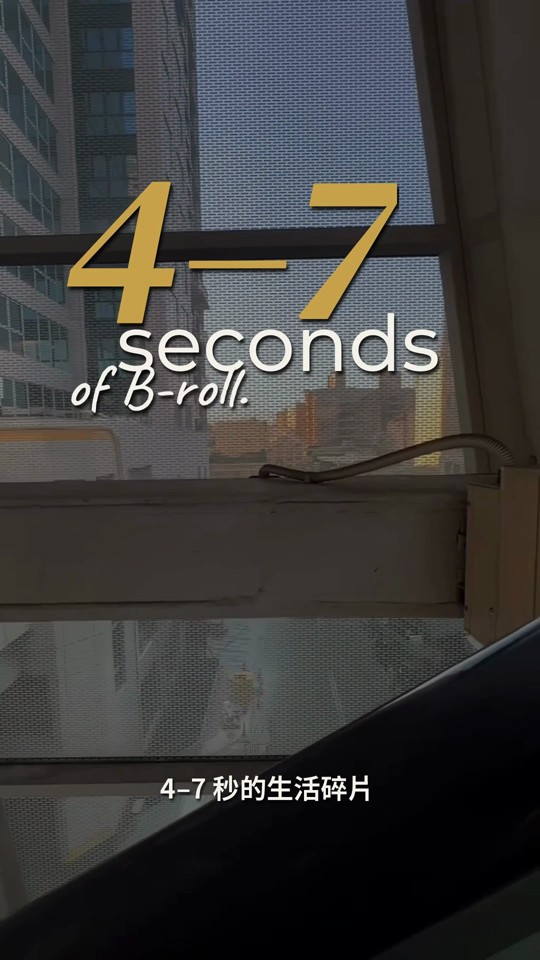
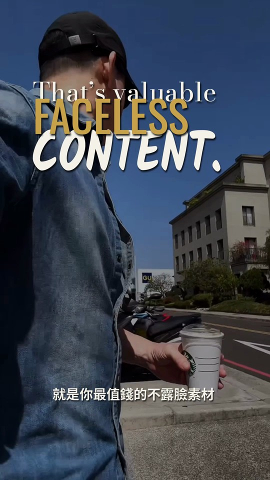
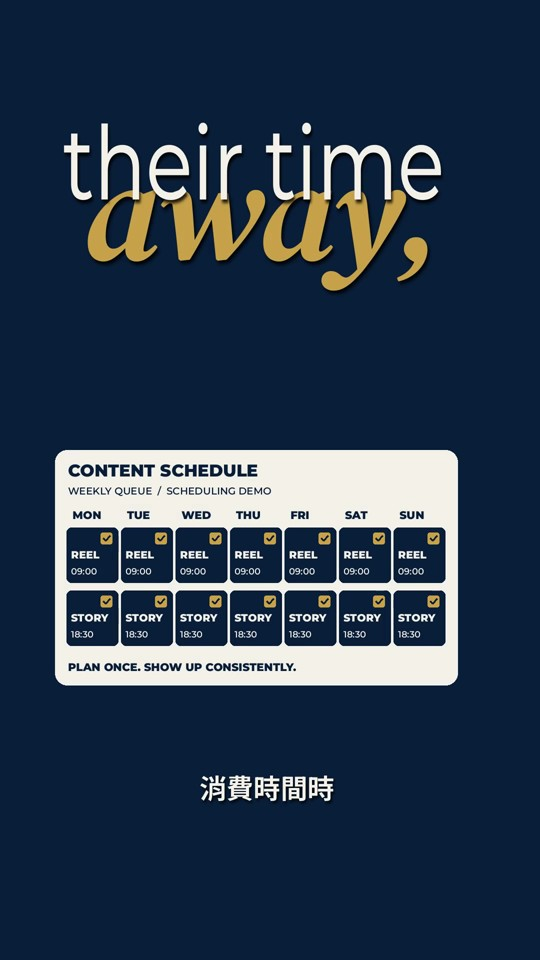

把內容做出來
從生活素材、口播與真實觀點出發，減少卡在剪輯與排版的時間。
YOUR LIFE. YOUR CONTENT. YOUR SYSTEM.
Create more.
Live more.
從社群經營，到打造自己的個人品牌。
四個階段、每日任務，用 AI 加快內容製作。
不用先成為網紅。
從你現在有的素材與經驗開始。
↔ 左右拖曳，對照同一段生活素材的前後變化。
預設靜音，點右下角可開啟原聲。
THE WHOLE PICTURE
不只把影片剪好。
生活、經驗、想法，每天都在發生。真正卡住的，往往是拍完以後：怎麼整理、怎麼做出來、發布之後，又要把人帶去哪裡？
30D 把內容、AI 工具、個人品牌、產品與承接放在同一條路上。每次執行都有紀錄，每次回饋都用來修正。你做過的事，才會留下來。
AI 幫你加快製作。
30D 幫你決定，接下來該做什麼。
從生活素材、口播與真實觀點出發，減少卡在剪輯與排版的時間。
讓內容有下一步。串起 CTA、私訊回覆、產品與適合你的承接路徑。
記下有效的開頭、流程與案例。下一次使用，再更新成更好的版本。
AI EDITING × CREATOR WORKFLOW
02 / MAKE IT HAPPEN
不用只說「幫我剪好看一點」。
把素材、重點、字型與顏色變成清楚的指令，
先看分鏡，再把畫面做出來。
「保留原聲、中文字幕放底部。英文用大字堆疊，米白與金色做重點，自動化那段加入行事曆示意。」

02 / 看分鏡
03 / 調整細節
04 / 輸出影片你的文字、你的顏色、你的節奏。每次修改，都留下可再用的設定。
THE 30D LOOP
03 / FIND YOUR NEXT STEP
30D 採年訂閱制，分成四個成長階段，每個階段都有每日任務。每天跟著任務經營社群、發布內容，再用回饋修正；30 天是一輪持續累積的節奏。
先找出卡點，再做當下最需要的事。追蹤數只是參考，不是升級條件。
點選你目前的階段下方內容會隨選擇切換，查看適合你的下一步。
參考位置 / 0–3K 追蹤
把內容、商品與承接連起來。先讓一套最小系統運作，再用真實回饋調整。
依你的節奏前進，沒有強制打卡。這一輪做過的事，會成為下一輪的起點。
A SYSTEM THAT LOOKS LIKE YOU
讓別人認出你的，
不只是一張臉。
你的觀點。
你的風格。
深藍作為背景，字幕以米白、金色與少量冰藍呈現；紅色用於封鎖等語意重點。你的品牌，可以套用自己的設定。
WHAT YOU BUILD
04 / LEAVE WITH A SYSTEM
依目前卡點，找到內容、流量、信任、產品與承接的優先順序。
需要時再學工具。把製作指令、分鏡、字幕與品牌設定留成自己的流程。
學習、討論與執行紀錄集中在一個地方，遇到問題知道去哪裡找下一步。
拿已經做過的內容與真實結果，判斷卡點、修正方向與下一步。
依社群公布與預約安排，把執行時遇到的問題帶進討論。
留下開頭、模板、指令、案例與復盤。每次發布，都在更新自己的系統。
WHY I BUILT THIS
我也走過收藏一堆方法，卻不知道下一步該做什麼的階段。
身為單親爸爸，我想要的生活，不是把每一個晚上都交給工作。所以我把做過的事整理成流程，把有效的方法留下來，也把不必反覆重做的工作交給工具。
30D 是把這條路徑攤開。你先做、先發，拿到真實回饋，我們再一起看：哪裡卡住，什麼可以先不做，下一步往哪裡走。
適合。30D 不只給新手。有觀看卻沒有承接、有產品但內容沒有連結，都是不同的卡點。我們先看你真正需要解決的問題，再選擇路徑。
從 LAUNCH 開始，把內容、商品與承接入口連起來。不需要先把所有工具學完；先完成一件能實際發布或測試的事。
不是。30 天是一輪執行與修正的長度，不是截止日期。依你的節奏使用，沒有強制打卡；遇到下一個瓶頸，再回來找下一步。
AI 能加快字幕、排版與畫面製作，但內容重點、分鏡和成片仍需要你確認。先看分鏡、用口語提出修改、確認後輸出，讓工具照著你的需求工作。
課程、社群與日常內容規劃可以用手機。本機 AI 剪輯流程需要電腦與對應工具環境；這個頁面是作品示範，不是直接上傳影片的線上剪輯器。
頁面裡的勾選是排程流程示意。實際發布、留言與私訊自動化，需要依帳號與工具設定、串接和測試；先把內容與承接準備好，再建立適合你的流程。
不用一開始就買齊。先用手上的工具開始；AI、設計、剪輯與承接工具，在工作流程需要時再選擇，部分服務可能有自己的使用費用。
不用。聯盟推廣是選擇性加值，並不是加入條件。你可以專注建立自己的內容、產品與服務；計畫的實際條件以社群公告為準。
YOUR NEXT CHAPTER
從你現在能做的一件事開始。
把它做出來，再一起把系統建立起來。
30D CREATOR OS / 年訂閱
NT$32,957 / 年
台幣為含稅金額，由綠界科技 ECPay 提供金流服務。實際計費金額、幣別與週期，以結帳頁為準。
刷卡一次付清接受海外信用卡。分期與匯款僅限台灣發卡銀行／台灣帳戶。
本方案包含數位課程、社群存取及相關服務。購買前請完整閱讀服務內容、使用期間、取消與退款規則。完成付款並開始存取課程或加入社群，即視為服務已開始提供。
本方案為持續性訂閱服務。實際計費金額、幣別與週期，以付款頁面結帳時顯示為準；取消訂閱僅停止下一週期的續訂，不影響當期已付款的服務。詳細規範請參閱 Membership & Purchase Terms ↗。